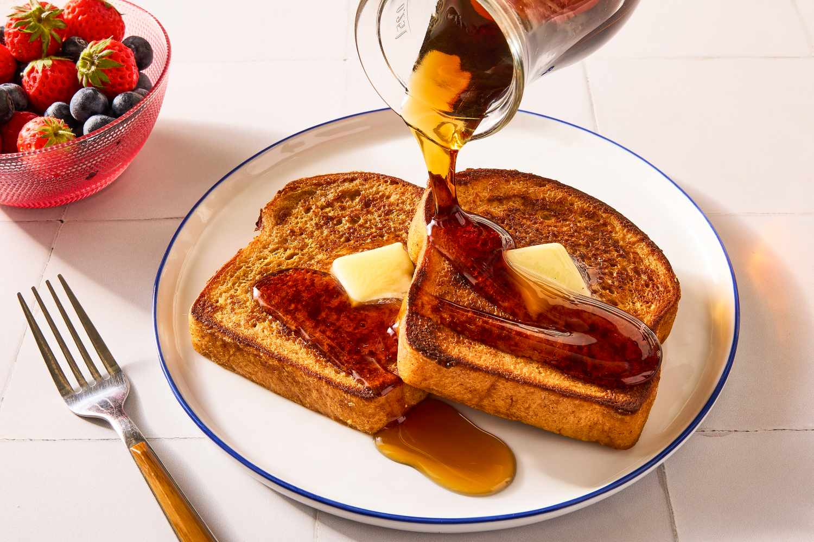

Home
French Toast

Description
French toast is a classic breakfast dish made by soaking slices of bread in a mixture of beaten eggs, milk, and warm spices, then cooking them on a skillet until golden brown.
It is soft on the inside, slightly crisp on the outside, and often served with syrup, fruit, powdered sugar, or butter.
Ingredients
- Bread slices
- Milk
- Eggs
- Vanilla extract
- Ground cinnamon
- Maple syrup (for serving )
- Butter
- Sugar
- Fresh fruit (optional, for serving)
Steps
- In a shallow bowl, whisk together the eggs, milk, vanilla extract, ground cinnamon, and sugar until well combined.
- Heat a skillet or frying pan over medium heat and add a little butter to coat the surface.
- Dip each slice of bread into the egg mixture, making sure both sides are coated but not overly soaked.
- Place the coated bread slices onto the hot skillet.
- Cook for 2–3 minutes on each side, or until golden brown and slightly crisp.
- Remove the French toast from the skillet and place on a serving plate.
- Serve warm with maple syrup, powdered sugar, fresh fruit, or extra butter if desired.